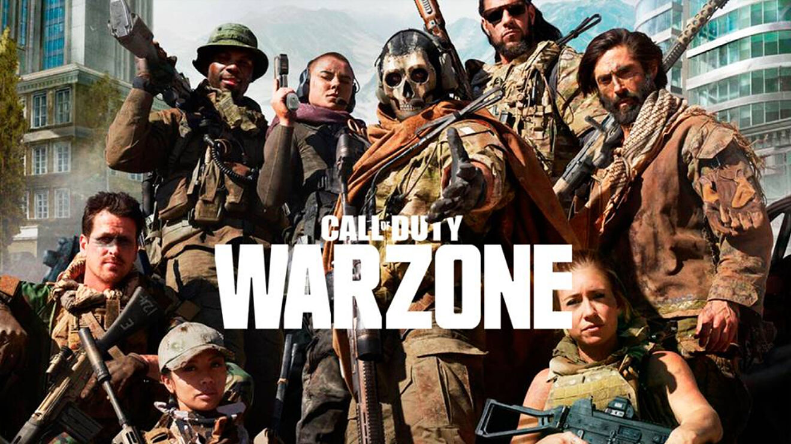
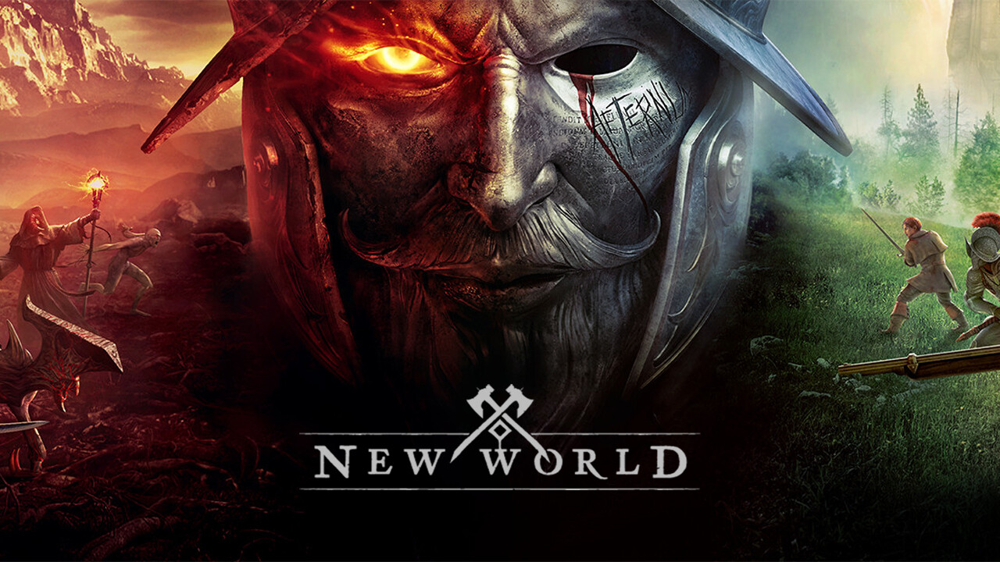
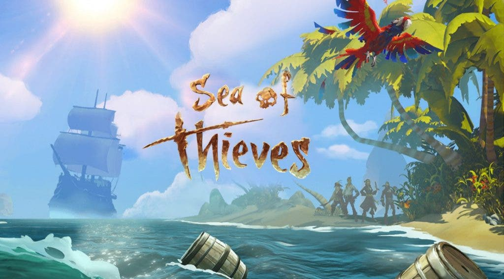
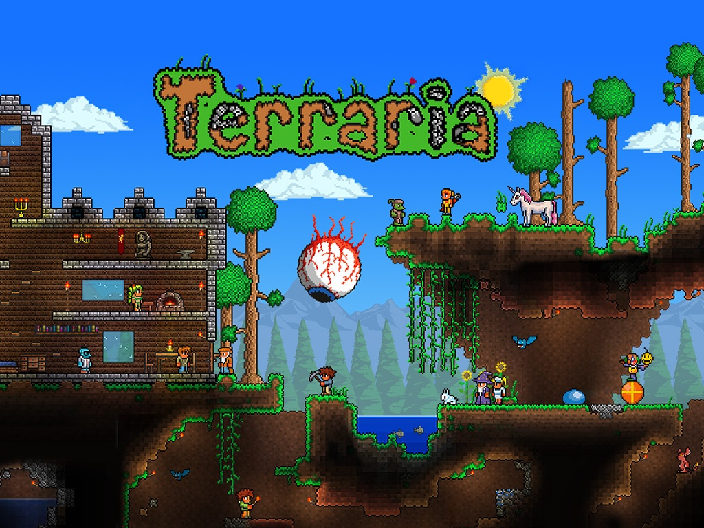
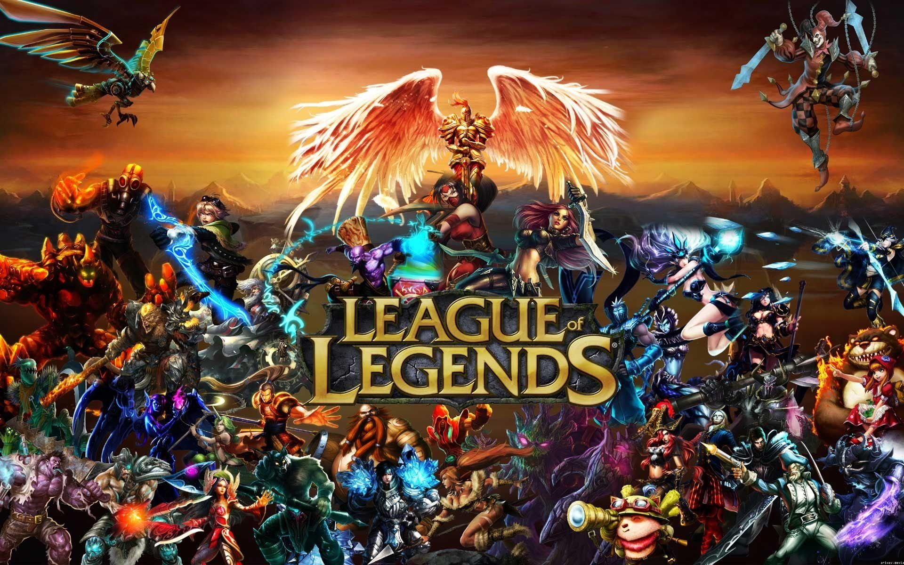

Top de Favoritos
Apex Legends

Apex Legends se desarrolla en un universo envolvente donde la historia sigue evolucionando, los mapas cambian cada temporada y nuevas leyendas se siguen uniendo a la lucha. ¡Deja tu marca en los Apex Games con multitud de atuendos característicos y aviéntate a la aventura!
CS:GO

La acción de Counter-Strike se desarrolla en rondas de una duración elegida por el que las crea, en la cual un equipo de terroristas (T) se enfrenta a un equipo de antiterroristas (CT). El equipo victorioso es el que cumpla todos sus objetivos de victoria, de situación o la eliminación de todos los jugadores del otro equipo. Si al final de la ronda no hay victoria directa de uno de los dos equipos, el equipo que no realizó sus objetivos pierde por eliminación.
Warzone
Warzones es el modo Battle Royale de Call of Duty: Modern Warfare. Un modo de juego que nos permitirá caer en una isla con otros 150 jugadores para comprobar quién es el último que queda en pie. Además del clásico estilo Battle Royale, Warzone también incluirá un modo adicional llamado Plunder.
New World
La guerra es el pináculo de JcJ en New World: épicas guerras de asedio a escala masiva, con equipos de 50 jugadores de atacantes y defensores luchando por el control y la victoria. El resultado de cada guerra determina qué compañía controla el territorio o los asentamientos disputados, lo cual convierte esto en una lucha por el futuro de Aetérnum.
Sea of Trives
Sea of Thieves ofrece la experiencia de piratería por excelencia, lleno de aventuras de navegación, exploración y saqueos, acertijos por resolver y tesoros por descubrir... todo lo que necesitas para vivir la vida de pirata con la que siempre has soñado.
Terraria
Terraria es un videojuego de mundo abierto en 2D. Contiene elementos de construcción, exploración, aventura y combate, muy similar a juegos clásicos de la consola Super NES, como por ejemplo la serie Metroid, y a otras entregas más recientes como Minecraft. El juego comienza en un mundo creado de forma aleatoria.
Leage of Legends
League of Legends es un juego de estrategia por equipos en el que dos equipos de cinco campeones se enfrentan para ver quién destruye antes la base del otro. Elige de entre un elenco de 140 campeones para realizar jugadas épicas, asesinar rivales y derribar torretas para alzarte con la victoria.
Minecraft

Minecraft es un juego de mundo abierto, y no tiene un fin claramente definido. Esto permite una gran libertad en cuanto a la elección de su forma de jugar. A pesar de ello, el juego posee un sistema que otorga logros por completar ciertas acciones.
Fortnite

Es un juego de tipo batalla real en el que compiten hasta cien jugadores en solitario o en escuadrones de dos o cuatro miembros. Los jugadores saltan de un autobús que cruza el mapa en el momento que deseen, y empiezan sin armas. Cuando aterrizan, deben buscar armas, objetos útiles y recursos, evitando que los maten mientras atacan a otros jugadores. La acción se divide en rondas con una duración determinada
GTAV

Se trata de una aventura de acción de mundo abierto con multitud de misiones en la que encarnamos a tres personajes distintos: Trevor, Michael y Franklin. Además, cuenta con GTA Online, el modo multijugador en lína de GTA 5.